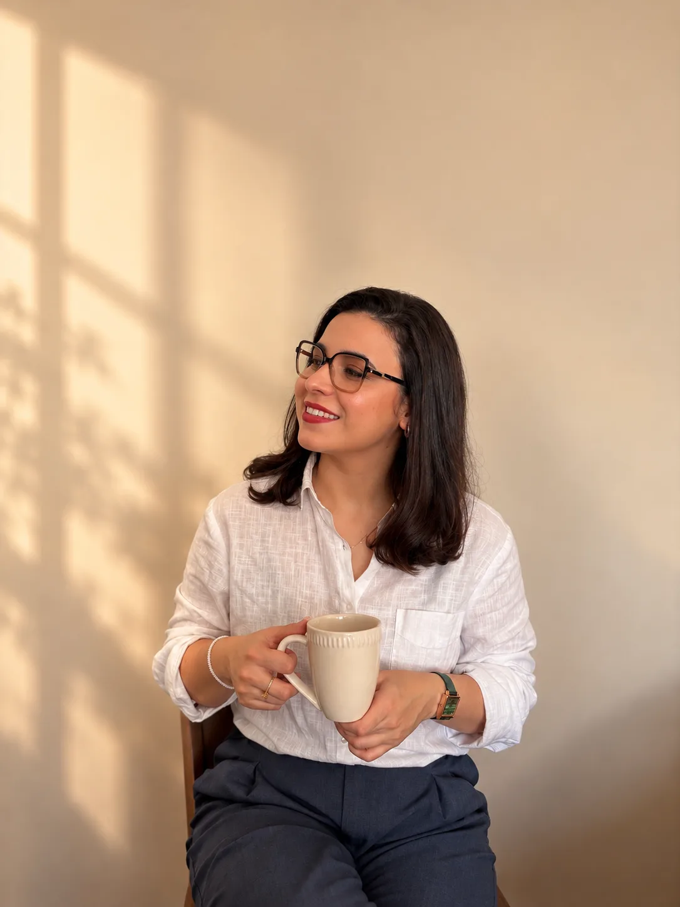

Ser escutado de verdade
Um espaço de escuta respeitosa, sem julgamentos, para falar sobre o que importa para você.
PSICOTERAPIA ONLINE PARA ADULTOS
Um encontro com a sua história, no seu tempo. Um espaço de escuta, compreensão e cuidado para atravessar os desafios da vida.
Quero começar a conversar ↗
Prazer, sou a Suê.01 / QUEM SOU
Sou Suê Elizabeth, psicóloga, e acredito na importância de compreender cada pessoa a partir de sua história, de suas relações e das experiências que atravessam sua vida.
Minha atuação é orientada pelo conhecimento científico e por uma escuta atenta às particularidades de cada indivíduo. No atendimento clínico, busco oferecer um espaço de acolhimento, reflexão e desenvolvimento de novas formas de lidar com os desafios da vida adulta.
Texto biográfico provisório, sujeito à revisão e aprovação profissional.
Conheça minha abordagem ↗02 / O PROCESSO TERAPÊUTICO
A psicoterapia pode ser um espaço para olhar com mais atenção para aquilo que você vive, sente e deseja transformar.
Um espaço de escuta respeitosa, sem julgamentos, para falar sobre o que importa para você.
Observar padrões, emoções e relações para ampliar a compreensão sobre a própria experiência.
Desenvolver recursos para lidar com desafios e fazer escolhas mais alinhadas aos seus valores.
03 / MINHA ABORDAGEM
Meu trabalho dialoga com a clínica analítico-comportamental e a Terapia de Aceitação e Compromisso (ACT), valorizando a compreensão do contexto de vida de cada pessoa.
Mais do que buscar respostas prontas, o processo terapêutico convida à reflexão sobre sentimentos, comportamentos e aquilo que faz sentido para você.
Cada trajetória é única. O cuidado também deve ser.
Nem tudo precisa ser resolvido de uma vez. Às vezes, o primeiro passo é poder falar sobre isso.UM CONVITE AO CUIDADO
04 / O PRIMEIRO PASSO
Se você está pensando em iniciar a psicoterapia, entre em contato. Podemos conversar sobre o atendimento e esclarecer suas dúvidas.
Conversar pelo WhatsApp ↗Atendimento psicológico online para adultos.